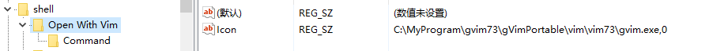
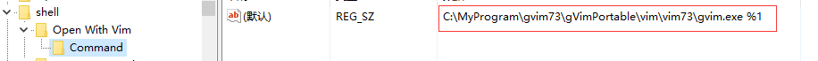

Vim配置
win10 右键菜单添加使用 Neovim 打开方式
打开注册表编辑器，开始–>运行–>regedit
定位到：HKEY_CLASSSES_ROOT—> * —>Shell，在Shell 上右击，新建—> 项，输入： Open With Neovim（使用Neovim打开）
在 Open With Neovim 右键—>新建—>字符串值，数值名称设置为：Icon，数值数据设置为：xxx\nvim-qt.exe,0 (替换成自己的路径地址)
1
2
3
4/* 以 Gvim 举例，两者类似，注意应用时候替换路劲
* 数值名称：Icon
* 数值数据：C:\MyProgram\gvim73\gVimPortable\vim\vim73\gvim.exe,0
*/
上面的设置会带来一个小问题：当文件名的最后一个字符为空格时，使用VIM打开某个文件时会新建一个空白的文件，而不是直接打开该文件。
- 解决方法：加引号，如下图所示，注意应用时候替换路径
xxxx.exe “%1”

80字符提示条
1 | " 设置编码最长80字符提示条，额外高亮显示第80列 |
vim 开启错误信息一闪而过,可使用命令查看
:messages
使用silent静默执行命令
如果不希望显示提示信息，那么可以使用:silent命令
1 | 对于*`git` executable not found. Most commands will not be available. To suppress this message, prepend `silent!` to `call plug#begin(...)`.*错误 |
在vim配置文件中修改为:
1 | silent! call plug#begin |
neovim-qt 标签栏显示有问题
neovim 还有一个配置文件，ginit.vim ，与init.vim 同一个目录下。
- gitee : https://gitee.com/mirrors/neovim-qt
- github: https://github.com/equalsraf/neovim-qt
- wiki: https://github.com/equalsraf/neovim-qt/wiki/Configuration-Options#GuiFont
These options are specific to Neovim Qt. The options cannot be set from init.vim, they must be set from ginit.vim.
Recommended ginit.vim
1 | " Enable Mouse |
For more options, try :help nvim_gui_shim and scroll down to Commands
使用powerline 字体斜体导致状态栏消失
增大行距
set linespace=5